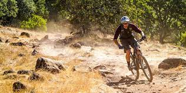

Project 1:One project that I have done with my acedemics this school year was create a slideshow on the stuff I did over the summer. The project was done for spanish class and it was around 10 slides along based around what I did over the summer. To compelte the project, I had to be creative with my writing and be engaging. I talked mostly about how I spent alot of time outside, doing activites like mountain biking, hiking, and rafting |
Project 2:Another big project I did was an iSearch in 9th grade. The iSearch was based around the idea of how technology helped society adapt to covid. There were multiple aspects to the project, some of which included writing, research, drawing, and interviewing people that were related to my topic. The project was completed for English, and it was fun to make. |